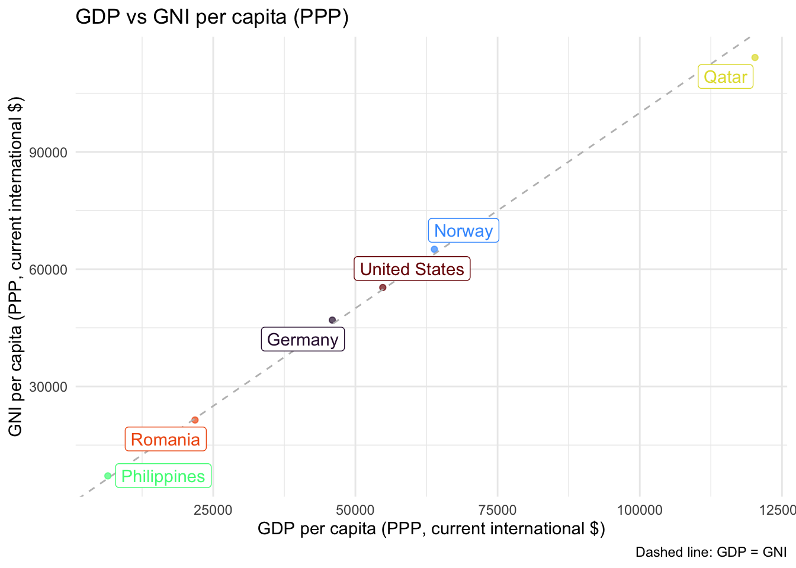
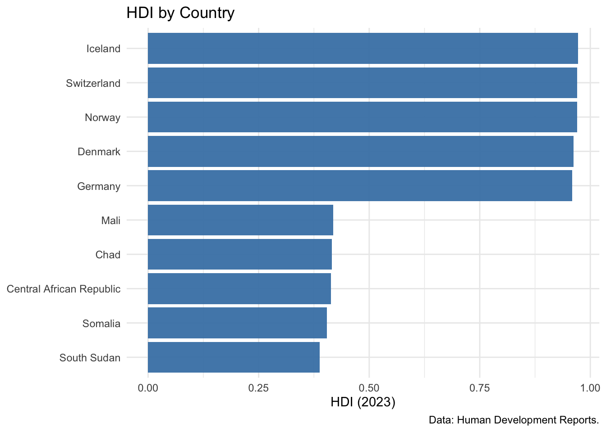
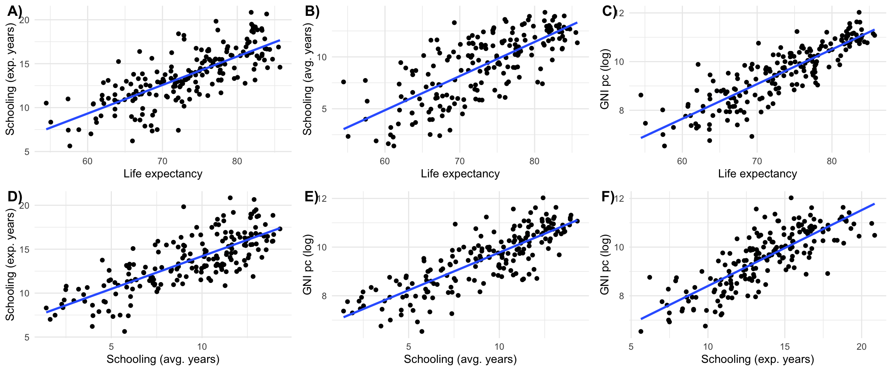
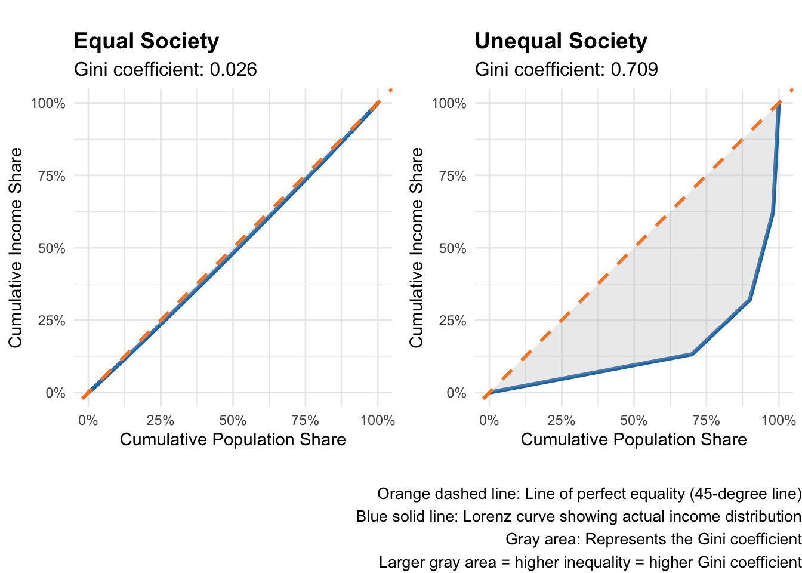
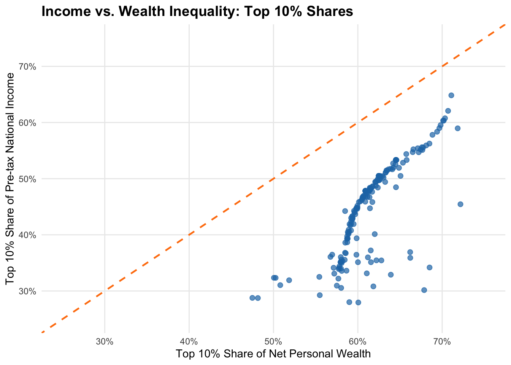
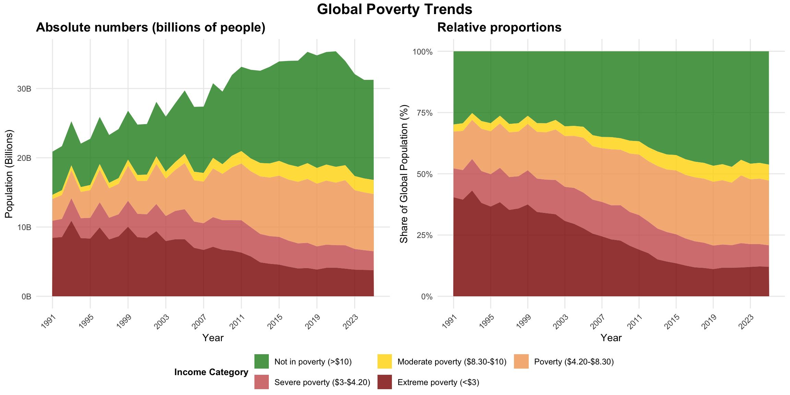
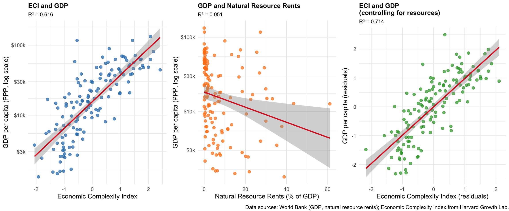
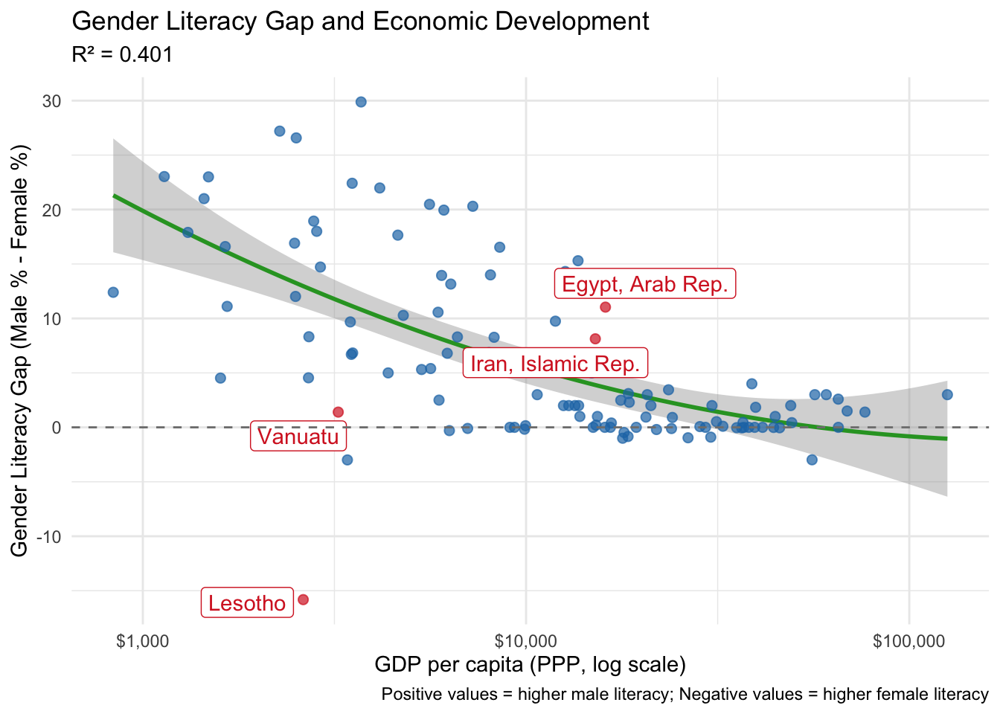

![]()
Packages used for R examples
here::i_am("content/tutorials/MeasuringDevelopment/index.qmd")
library(here)
library(WDI)
library(kableExtra)
library(readr)
library(ggplot2)
library(dplyr)
library(ggrepel)How do we know if a country is “developing”? This seemingly simple question has sparked decades of debate among economists, policymakers, and development practitioners. The answer you get depends entirely on how you measure development – and as you’ll discover in this guide, there are many ways to do so.
Just as a simple example, consider these three scenarios:
Which country is developing most successfully? The answer depends on what you think development means and how you choose to measure it. Development indicators can be both exciting and frustrating. On the one hand, they force people to be explicit about what they mean by “development.” On the other hand, however, in practice, people who use development indicators often don’t think about the big ideas and normative commitments behind these numbers. After reading this short introduction to the most common development indicators, you should be ready to do better.
Development measurement isn’t just an academic exercise. The indicators discussed below shape how real-world decisions are being made:
This guide introduces you to the most important quantitative measures used in development economics today. Rather than advocating for any single approach, we’ll explore multiple perspectives – from traditional economic indicators to alternative measures that challenge conventional thinking.
Throughout this guide, we maintain a pluralist perspective that recognizes legitimate disagreement about how to measure development. Whether you’re drawn to neoclassical growth theory, capabilities approaches, or structuralist critiques, you’ll need to understand how different schools of thought measure progress toward their vision of development.
As you’ll see, there is no “perfect” development indicator. Each measure captures something important while missing something else. The goal isn’t to find the one true measure, but to build your analytical toolkit so you can choose the right tools for your research questions – and understand the implications of those choices.
GDP is probably not only the most widely used measure for development, but also the one that received the most critiques. The main reason is that while GDP was developed as a measure for the total income in an economy, it is often used - implicitly or explicitly - as a measure for wellbeing. Something it has not been designed for in the first place. But we come back to this debate later on, here is is mainly about what GDP is in the first place. If you are looking for a slightly more complete, but still very accessible introduction, read chapter 24 of Mankiw (2024).
Definition & Calculation:
A common definition of GDP is “the market value of all final goods and services produced within a country in a given period” (Mankiw 2024: 24).1 GDP aggregates many different goods and services by using their market value as a common unit - for example, it adds together cars, haircuts, and smartphones by using their prices.
While this allows straightforward aggregation, it comes with drawbacks: GDP excludes most goods for which no market value is available (or uses only approximate estimations of their hypothetical market value), such as goods produced for subsistence or household consumption.
Also note that GDP focuses on final demand, so it does not include intermediate goods (like steel sold to car manufacturers). It also focuses on produced goods, so sales of new cars are included while sales of used cars are not.
An important distinction in practice is that of Real vs. Nominal GDP: Nominal GDP measures output at current market prices, while real GDP adjusts for inflation by using constant prices from a base year. For instance, if we look at the GDP for the years 2010, 2011 and 2012, nominal GDP would be calculated using the respective prices of each year. For the real GDP we need to set a base year. Assume we set 2010 as this base year. Then we compute the GDP for 2011 and 2012 using the prices from 2010 for all three years. Real GDP enables meaningful comparisons over time by removing the effect of price changes. For example, if nominal GDP doubles but all prices also double, real GDP remains unchanged - the economy has not actually grown, but only prices have.
Another important correction in the context of development is that of Purchasing Power Parity (PPP) adjustment: PPP corrects for price level differences between countries, enabling better comparisons across nations. This is important because the same basket of goods might cost very different amounts of money in different countries: 1,000 USD, for instance, buys more goods in India than in Norway, simply because the price level in India is much lower than in Norway. PPP adjustments convert all countries’ GDP to a common currency (usually so called international dollars) based on what the money can actually buy domestically, rather than using market exchange rates.
Common Data Sources:
NY.GDP.PCAP.CD (current US$)NY.GDP.PCAP.KD (constant 2015 US$)NY.GDP.PCAP.PP.CD (PPP current international $)rgdpe (expenditure-side real GDP), rgdpo (output-side real GDP), rgdpna (national accounts).
What it captures and other advantages:
What it omits and other disadvantages:
Definition & Calculation:
GNI equals GDP plus net income from abroad (labor and capital income earned by residents in other countries minus income earned by non-residents domestically). This captures income earned by residents regardless of where production occurs. The World Bank uses the Atlas method (3-year average exchange rates) to smooth currency fluctuations. GNI is also available in PPP terms using the same adjustment as GDP.
Data Sources:
NY.GNP.PCAP.CD (Atlas method), NY.GNP.PCAP.PP.CD (PPP current international $)What it captures and other advantages:
What it omits and other disadvantages:
here::i_am("content/tutorials/MeasuringDevelopment/index.qmd")
library(here)
library(WDI)
library(kableExtra)
library(readr)
library(ggplot2)
library(dplyr)
library(ggrepel)There is the very useful package WDI, which allows you to download many development indicators from the World Bank database directly.
countries <- c("US", "DE", "QA", "NO", "PH", "RO")
indicators <- c(
"GDPpc"="NY.GDP.PCAP.PP.CD",
"GNIpc"="NY.GNP.PCAP.PP.CD")
data_gdp_gni <- WDI::WDI(
country = countries,
indicator = indicators,
start = 2000,
end = 2024)Using this data we can look at the relationship between GDP and GNI for some selected countries. See Figure 1 and Table 1. As you can see the two are usually very similar. The larger differences for some countries point to some important structural features:
# Clean and reshape data
data_clean <- data_gdp_gni |>
filter(!is.na(GDPpc) & !is.na(GNIpc)) |>
summarise(across(
.cols = all_of(c("GDPpc", "GNIpc")),
.fns = mean),
.by = "country") |>
mutate(difference = GNIpc - GDPpc,
difference_pct = (difference/GDPpc)*100)
# Visualize GDP vs GNI
ggplot(data_clean, aes(x = GDPpc, y = GNIpc, color = country)) +
geom_point(alpha = 0.7) +
geom_abline(slope = 1, intercept = 0, linetype = "dashed", color = "gray") +
geom_label_repel(aes(label=country)) +
scale_color_viridis_d(option = "H") +
labs(title = "GDP vs GNI per capita (PPP)",
x = "GDP per capita (PPP, current international $)",
y = "GNI per capita (PPP, current international $)",
caption = "Dashed line: GDP = GNI") +
theme_minimal() +
theme(legend.position = "none")
# Show countries with largest differences
data_clean |>
select(country, difference_pct) |>
arrange(desc(abs(difference_pct))) |>
rename(Country=country, `Difference (%)`=difference_pct) |>
kable()| Country | Difference (%) |
|---|---|
| Philippines | 9.8973412 |
| Qatar | -5.0794819 |
| Germany | 2.2651947 |
| Norway | 1.8765902 |
| Romania | -1.7633074 |
| United States | 0.8986123 |
The Human Development Index (HDI) was created in 1990 as a response to the limitations of GDP as a development or welfare measure. While GDP captures economic output, it tells us little about whether this translates into better lives for people. The HDI was inspired by Amartya Sen’s capabilities approach (Sen 2000) and was designed to shift focus from economic growth to human-centered development. While it was meant to provide a more comprehensive view on development, another goal was to keep the indicator simple and transparent, to ensure international comparability and computability.
Definition & Calculation:
The HDI is a composite measure that combines three dimensions of human development:
Each dimension is normalized to a scale of 0 to 1, then the HDI is calculated as the geometric mean of the three dimension indices. Countries are classified into four categories: Very High (0.800+), High (0.700-0.799), Medium (0.550-0.699), and Low (below 0.550) human development.
Data Sources:
What it captures and other advantages:
What it omits and other disadvantages:
Definition & Calculation:
Inequality across gender has received more and more attention in development economics. One straightforward mearues for differences between living conditions across gender is the GDI. It measures gender gaps in human development by calculating separate HDI values for women and men, then taking their ratio. A GDI value of 1 indicates perfect equality.
The GII takes a slightly different approach and considers different dimensions than the classical HDI, all more focused on measuring the living conditions of females. It takes into account three dimensions:
Higher values of the GII indicate greater inequality.
Data Sources:
What they capture and other advantages:
What they omit and other disadvantages:
library(kableExtra)
library(readxl)
library(readr)
library(WDI)
library(ggplot2)
library(dplyr)
library(tidyr)
library(tibble)
library(ggpubr)The HDI data can be obtained from the official homepage.2
hdi_data <- read_xlsx(
path = here("content/tutorials/MeasuringDevelopment/HDR25_Statistical_Annex_HDI_Table.xlsx"),
range = "A6:O199"
) |>
select(-starts_with("..."))Figure 2 shows the countries with the highest and lowest HDI values. The relationships between the different components are visualized in Figure 3. Correlations can be seen in Table 2.
hdi_subset <- bind_rows(
hdi_data %>% arrange(`Human Development Index (HDI)`) %>% slice_head(n = 5),
hdi_data %>% arrange(desc(`Human Development Index (HDI)`)) %>% slice_head(n = 5)
)
p1 <- ggplot(hdi_subset, aes(
x = reorder(Country, `Human Development Index (HDI)`),
y = `Human Development Index (HDI)`)
) +
geom_col(fill = "steelblue", alpha = 0.95) +
coord_flip() +
labs(title = "HDI by Country",
x = "Country", y = "HDI (2023)", caption = "Data: Human Development Reports.") +
theme_minimal() +
theme(axis.title.y = element_blank())
p1
# As for the calculation, the log of GNI is used:
hdi_data_plot <- hdi_data |>
mutate(`Gross national income (GNI) per capita` = log(
`Gross national income (GNI) per capita`)) |>
rename(
`GNI pc (log)` = `Gross national income (GNI) per capita`,
`Schooling (exp. years)` = `Expected years of schooling`,
`Schooling (avg. years)` = `Mean years of schooling`,
`Life expectancy` = `Life expectancy at birth`
)
# Correlation plots between components
make_cor_plot <- function(data, var1, var2){
ggplot(data, mapping = aes(x=.data[[var1]], y=.data[[var2]])) +
geom_point() +
theme_minimal()
}
p1 <- make_cor_plot(
hdi_data_plot, "Life expectancy", "Schooling (exp. years)") +
geom_smooth(method = "lm", se = FALSE)
p2 <- make_cor_plot(
hdi_data_plot, "Life expectancy", "Schooling (avg. years)") +
geom_smooth(method = "lm", se = FALSE)
p3 <- make_cor_plot(
hdi_data_plot, "Life expectancy", "GNI pc (log)") +
geom_smooth(method = "lm", se = FALSE)
p4 <- make_cor_plot(
hdi_data_plot, "Schooling (avg. years)", "Schooling (exp. years)") +
geom_smooth(method = "lm", se = FALSE)
p5 <- make_cor_plot(
hdi_data_plot, "Schooling (avg. years)", "GNI pc (log)") +
geom_smooth(method = "lm", se = FALSE)
p6 <- make_cor_plot(
hdi_data_plot, "Schooling (exp. years)", "GNI pc (log)") +
geom_smooth(method = "lm", se = FALSE)
ggpubr::ggarrange(plotlist = list(p1, p2, p3, p4, p5, p6),
ncol = 3, nrow = 2, labels = paste0(LETTERS[1:6], ")"))
correlations <- hdi_data |>
select(c("Life expectancy at birth",
"Expected years of schooling",
"Mean years of schooling",
"Gross national income (GNI) per capita")
) |>
cor(use = "pairwise.complete.obs") |>
as.data.frame() |>
rownames_to_column("var1") |>
pivot_longer(-var1, names_to = "var2", values_to = "correlation") |>
filter(var1 != var2) |>
mutate(var_min = pmin(var1, var2), var_max = pmax(var1, var2)) |>
distinct(var_min, var_max, .keep_all = TRUE) |>
select(var1 = var_min, var2 = var_max, correlation)
correlations |>
arrange(-correlation) |>
kable()| var1 | var2 | correlation |
|---|---|---|
| Expected years of schooling | Mean years of schooling | 0.7718560 |
| Expected years of schooling | Life expectancy at birth | 0.7567681 |
| Gross national income (GNI) per capita | Life expectancy at birth | 0.7426323 |
| Life expectancy at birth | Mean years of schooling | 0.7398667 |
| Gross national income (GNI) per capita | Mean years of schooling | 0.6499526 |
| Expected years of schooling | Gross national income (GNI) per capita | 0.6380733 |
While GDP and HDI provide average measures of economic output and human development, they tell us nothing about how these outcomes are distributed within countries. Two countries with identical GDP per capita or HDI scores can have vastly different levels of inequality.
Consider two hypothetical economies with 10 inhabitants each. In the first, each inhabitant has a total income of 100 EUR. Assuming this is the only source of income, the GDP of this economy would be 1,000 EUR. In the other economy, one inhabitant has an income of 991 EUR, while every other inhabitant has an income of 1 EUR. While the reality of this economy is very different, it has the same GDP as the first one: 1,000 EUR. To distinguish cases like this, we need to take into account inequality.
Understanding the distribution of wealth and income is crucial for studying development because high inequality can undermine social cohesion, political stability, and even future economic growth and development.
Wealth vs. income inequality: It is very important to distinguish inequality in terms of income and in terms of wealth. While income inequality is much easier to measure, wealth inequality is often even more pronounced and practically relevant. Very wealthy individuals, for instance, often get much of their income from profits, dividends and interest rather than wages. So while their reported taxable income might be relatively low, their wealth can be very high. In Germany, for example, estimations suggest that wealth inequality is much higher and more pronounced than income inequality, but there are no official comprehensive data about wealth distribution in the first place.
Definition & Calculation:
The Gini coefficient is the most widely used measure of income (or wealth) inequality. It ranges from 0 (perfect equality, where everyone has the same income) to 1 (perfect inequality, where one person has all the income). It is often expressed as a percentage (0-100%).
The Gini coefficient is derived from the Lorenz curve. You get the Lorenz curve if you plot the cumulative percentage of total income received on the y axis, and the cumulative percentage of the population (ranked from poorest to richest) on the x axis. In a perfectly equal society, where each person has exactly the same income, the two percentages are always equal and the Lorenz curve is actually a straight 45 degree line. If there is at least a little inequality, the curve emerging from connecting the actual observations diverges from the straight line. This is visualized for two examples in Figure 4. The Gini coefficient is then defined as the area between the Lorenz curve and the line of perfect equality, divided by the total area under the line of perfect equality. While this sounds complex, Figure 4 shows its actually pretty straightforward.
library(ggplot2)
library(dplyr)
library(ggpubr) # for ggarrange and annotate_figure
# Function to calculate Lorenz curve and Gini coefficient
calculate_lorenz_gini <- function(income_vector) {
# Sort incomes
sorted_income <- sort(income_vector)
n <- length(sorted_income)
# Calculate cumulative population and income shares
pop_share <- (1:n) / n
cum_income <- cumsum(sorted_income)
income_share <- cum_income / sum(sorted_income)
# Add origin point
pop_share <- c(0, pop_share)
income_share <- c(0, income_share)
# Calculate Gini coefficient using trapezoidal rule
# Gini = 1 - 2 * Area under Lorenz curve
area_under_lorenz <- sum(diff(pop_share) * (income_share[-1] + income_share[-length(income_share)])) / 2
gini <- 1 - 2 * area_under_lorenz
return(list(
pop_share = pop_share,
income_share = income_share,
gini = gini
))
}
# Create income distributions
set.seed(123)
# Equal society: everyone has similar income
equal_income <- rep(100, 100) + rnorm(100, 0, 5) # Small random variation
equal_income[equal_income < 0] <- 0 # No negative incomes
# Unequal society: highly skewed distribution
unequal_income <- c(
rep(10, 70), # 70% earn very little
rep(50, 20), # 20% earn moderate amount
rep(200, 8), # 8% earn good amount
rep(1000, 2) # 2% earn very high amount
)
# Calculate Lorenz curves and Gini coefficients
equal_result <- calculate_lorenz_gini(equal_income)
unequal_result <- calculate_lorenz_gini(unequal_income)
# Create data frames for plotting
equal_df <- data.frame(
pop_share = equal_result$pop_share,
income_share = equal_result$income_share,
type = "Equal Society"
)
unequal_df <- data.frame(
pop_share = unequal_result$pop_share,
income_share = unequal_result$income_share,
type = "Unequal Society"
)
# Plot 1: Equal society
p1 <- ggplot(equal_df, aes(x = pop_share, y = income_share)) +
geom_line(color = "#1f77b4", size = 1.2) +
geom_abline(slope = 1, intercept = 0, linetype = "dashed", color = "#ff7f0e", size = 1) +
geom_ribbon(aes(ymin = income_share, ymax = pop_share), alpha = 0.3, fill = "gray") +
coord_equal() +
scale_x_continuous(labels = scales::percent_format(), limits = c(0, 1)) +
scale_y_continuous(labels = scales::percent_format(), limits = c(0, 1)) +
labs(
title = "Equal Society",
subtitle = paste0("Gini coefficient: ", round(equal_result$gini, 3)),
x = "Cumulative Population Share",
y = "Cumulative Income Share"
) +
theme_minimal() +
theme(
plot.title = element_text(size = 14, face = "bold"),
plot.subtitle = element_text(size = 12)
)
# Plot 2: Unequal society
p2 <- ggplot(unequal_df, aes(x = pop_share, y = income_share)) +
geom_line(color = "#1f77b4", size = 1.2) +
geom_abline(slope = 1, intercept = 0, linetype = "dashed", color = "#ff7f0e", size = 1) +
geom_ribbon(aes(ymin = income_share, ymax = pop_share), alpha = 0.3, fill = "gray") +
coord_equal() +
scale_x_continuous(labels = scales::percent_format(), limits = c(0, 1)) +
scale_y_continuous(labels = scales::percent_format(), limits = c(0, 1)) +
labs(
title = "Unequal Society",
subtitle = paste0("Gini coefficient: ", round(unequal_result$gini, 3)),
x = "Cumulative Population Share",
y = "Cumulative Income Share"
) +
theme_minimal() +
theme(
plot.title = element_text(size = 14, face = "bold"),
plot.subtitle = element_text(size = 12)
)
# Combine plots with explanatory caption
combined_plot <- ggarrange(p1, p2, ncol = 2)
annotate_figure(
p = combined_plot,
bottom = text_grob(
"Orange dashed line: Line of perfect equality (45-degree line)\nBlue solid line: Lorenz curve showing actual income distribution\nGray area: Represents the Gini coefficient\nLarger gray area = higher inequality = higher Gini coefficient",
color = "black", hjust = 1.0, x = 1.0, size = 10
))
Data Sources:
SI.POV.GINI (Gini index)What it captures and other advantages:
What it omits and other disadvantages:
Definition & Calculation:
The Palma ratio divides the income share of the top 10% by the income share of the bottom 40%. It is based on the empirical observation that the middle class (50th-90th percentiles) tends to receive about half of total income across countries. It is, therefore, an insightful complement to the other inequality measures. But because of its simplicity and straightforward interpretation, some see it also as superior compared to the Gini and other wealth share indicators (Cobham and Sumner 2014).
Data Sources:
What it captures and other advantages:
What it omits and other disadvantages:
You can get a lot of key inequality indicators from the WID.world database. For this example I the post tax data directly from their webpage and compare the 10% shares for income and wealth.
here::i_am("content/tutorials/MeasuringDevelopment/index.qmd")
library(here)
library(readr)
library(readxl)
library(dplyr)
library(countrycode)
library(tidyr)
library(purrr)
library(stringr)
library(ggplot2)
# Function using str_split to select the variable name from file
extract_variable_text <- function(x) {
map_chr(str_split(x, "\\n"), ~ .x[2])
}
wid_data <- read_xlsx(here("content/tutorials/MeasuringDevelopment/WID_Data_22082025.xlsx"),
col_names = c("country", "variable", "percentile", "year", "value")) |>
dplyr::mutate(variable=extract_variable_text(variable)) |>
select(-percentile) |>
dplyr::mutate(country=countrycode(country, "country.name", "iso3c")) |>
filter(!is.na(country)) |>
filter(!country%in%c('CHN', 'GEO', 'IND', 'JEY', 'MEX', 'RUS', 'ZAF')) |>
pivot_wider(names_from = "variable", values_from = "value") |>
summarise(across(.cols = everything(), .fns = mean), .by = c("country"))
income_wealth_plot <- ggplot(data = wid_data, aes(x = `Net personal wealth`, y = `Pre-tax national income `)) +
geom_point(size = 2, alpha = 0.7, color = "#1f77b4") +
geom_abline(slope = 1, intercept = 0, linetype = "dashed", color = "#ff7f0e", size = 0.8) +
scale_y_continuous(
limits = c(0.25, 0.75),
labels = scales::percent_format(accuracy = 1),
name = "Top 10% Share of Pre-tax National Income"
) +
scale_x_continuous(
limits = c(0.25, 0.75),
labels = scales::percent_format(accuracy = 1),
name = "Top 10% Share of Net Personal Wealth"
) +
labs(
title = "Income vs. Wealth Inequality: Top 10% Shares",
) +
theme_minimal() +
theme(
plot.title = element_text(size = 14, face = "bold"),
plot.subtitle = element_text(size = 12),
axis.title = element_text(size = 11),
panel.grid.minor = element_blank()
)
income_wealth_plot
Figure 5 reveals a number of interesting patterns:
From a policy viewpoint this means that focusing only on income inequality underestimates true economic inequality considerably - wealth concentration provides a more complete picture. From a methodological perspective this demonstrates why using multiple inequality measures (income vs. wealth shares) reveals different aspects of economic inequality that single measures miss.
While inequality measures show how resources are distributed across the entire population, poverty measures focus specifically on those at the bottom of the distribution. Poverty measurement is crucial for development policy because it identifies who needs help most urgently and tracks progress in improving living conditions for the worst-off. However, defining and measuring poverty involves fundamental choices about what constitutes a minimally acceptable standard of living, which is why poverty measures are among the most normative and most debated indicators, not only in the context of development economics, but social sciences as a whole.
Definition & Calculation:
Absolute poverty lines define poverty as living below a fixed threshold, typically expressed as daily income or consumption. The World Bank currently uses three international poverty lines:
These lines are updated periodically to reflect new PPP data and changing economic conditions. Poverty headcount ratios show the percentage of population living below each threshold. These measures are critisized for various reasons, such as the PPP conversion not reflecting the living realities of the poor, World Bank statistics being very different to national estimates, or national povery lines failing to reflect the actual costs of living (e.g., Reddy and Pogge 2010).
Data Sources:
SI.POV.DDAY ($2.15)SI.POV.LMIC ($3.65)SI.POV.UMIC ($6.85)What it captures and other advantages:
What it omits and other disadvantages:
Definition & Calculation:
The MPI recognizes that poverty extends beyond low income to include deprivations in health, education, and living standards. It uses 10 indicators across three dimensions:
A person is considered multidimensionally poor if deprived in at least one-third of weighted indicators. The MPI combines the incidence of poverty (percentage of poor) with the intensity (average deprivation among the poor).
Data Sources:
What it captures and other advantages:
What it omits and other disadvantages:
Here we use data from World Bank Poverty and Inequality Platform (2025) that has been processed by the development blog and data center Our World in Data. For a subset of the world population, this visualizes the amount and share of people living in different kinds of poverty, following the official World Bank definition.
Please note that the measure used has been subject to critique, and the overall story, according to which the number of people not living in poverty has been increasing, has been called into question. The debate about the dynamics of poverty is certainly among the most important ones in development economics, also because it brings us to very fundamtental questions about capitalism and alternative economics systems. For populat contributions to this debate see, e.g., (Hickel 2019) or (Smith 2021), and for more academic examples (Sullivan and Hickel 2023) and the response in (Rutar 2024).
here::i_am("content/tutorials/MeasuringDevelopment/index.qmd")
library(here)
library(readr)
library(ggplot2)
library(ggpubr)
library(dplyr)
library(tidyr)
library(stringr)
poverty_data <- read_csv(
file = here("content/tutorials/MeasuringDevelopment/OWID-poverty-thresholds.csv")
) |>
select(-ends_with("annotations")) |>
pivot_longer(cols = starts_with("Number of")) |>
dplyr::mutate(name=str_remove(name, " - Income or consumption consolidated")) |>
summarise(Total=sum(value, na.rm = TRUE), .by = c("Year", "name")) |>
dplyr::mutate(
TotalPop=sum(Total), .by = c("Year"),
Share=Total/TotalPop)
# Clean the category names for better visualization
poverty_data_clean <- poverty_data %>%
filter(Year >= 1991) %>% # Filter data from 1991 onwards
mutate(
Category = case_when(
grepl("not in poverty", name) ~ "Not in poverty (>$10)",
grepl("between \\$8.30 and \\$10", name) ~ "Moderate poverty ($8.30-$10)",
grepl("between \\$4.20 and \\$8.30", name) ~ "Poverty ($4.20-$8.30)",
grepl("between \\$3 and \\$4.20", name) ~ "Severe poverty ($3-$4.20)",
grepl("\\$3 a day", name) ~ "Extreme poverty (<$3)",
TRUE ~ name
)
) %>%
# Reorder categories for reverse stacking below (extreme poverty at bottom)
mutate(
Category = factor(Category, levels = c(
"Not in poverty (>$10)",
"Moderate poverty ($8.30-$10)",
"Poverty ($4.20-$8.30)",
"Severe poverty ($3-$4.20)",
"Extreme poverty (<$3)"
))
)# Define colors
colors <- c(
"Extreme poverty (<$3)" = "#8B0000",
"Severe poverty ($3-$4.20)" = "#CD5C5C",
"Poverty ($4.20-$8.30)" = "#F4A460",
"Moderate poverty ($8.30-$10)" = "#FFD700",
"Not in poverty (>$10)" = "#228B22"
)
# Chart 1: Absolute values
chart1 <- ggplot(poverty_data_clean, aes(x = Year, y = Total/1e9, fill = Category)) +
geom_area(alpha = 0.8) +
scale_fill_manual(values = colors) +
scale_x_continuous(breaks = seq(min(poverty_data_clean$Year),
max(poverty_data_clean$Year), by = 4)) +
scale_y_continuous(labels = scales::comma_format(suffix = "B")) +
labs(
title = "Absolute numbers (billions of people)",
x = "Year",
y = "Population (Billions)",
fill = "Income Category"
) +
theme_minimal() +
theme(
plot.title = element_text(size = 14, face = "bold"),
plot.subtitle = element_text(size = 12),
panel.grid.minor = element_blank(),
legend.position = "bottom",
legend.title = element_text(size = 10, face = "bold"),
legend.text = element_text(size = 9),
axis.text.x = element_text(angle = 45, hjust = 1)
) +
guides(fill = guide_legend(nrow = 2, byrow = TRUE))
# Chart 2: Relative shares
chart2 <- ggplot(poverty_data_clean, aes(x = Year, y = Share, fill = Category)) +
geom_area(alpha = 0.8) +
scale_fill_manual(values = colors) +
scale_x_continuous(breaks = seq(min(poverty_data_clean$Year),
max(poverty_data_clean$Year), by = 4)) +
scale_y_continuous(labels = scales::percent_format()) +
labs(
title = "Relative proportions",
x = "Year",
y = "Share of Global Population (%)",
fill = "Income Category"
) +
theme_minimal() +
theme(
plot.title = element_text(size = 14, face = "bold"),
plot.subtitle = element_text(size = 12),
panel.grid.minor = element_blank(),
legend.position = "bottom",
legend.title = element_text(size = 10, face = "bold"),
legend.text = element_text(size = 9),
axis.text.x = element_text(angle = 45, hjust = 1)
) +
guides(fill = guide_legend(nrow = 2, byrow = TRUE))
# Combine both charts using ggarrange
combined_plot <- ggarrange(
chart1, chart2,
ncol = 2, nrow = 1,
common.legend = TRUE,
legend = "bottom"
)
# Add a common title to the combined plot
annotated_plot <- annotate_figure(
combined_plot,
top = text_grob("Global Poverty Trends",
color = "black", face = "bold", size = 16)
)
print(annotated_plot)
Economic complexity measures go beyond traditional economic indicators to assess the sophistication and diversification of a country’s productive capabilities. These measures are based on the idea that economic development involves accumulating productive knowledge and capabilities that enable countries to produce increasingly complex goods and services.
Definition & Calculation:
The Economic Complexity Index measures the technological complexity of an economy. By this one refers to the technological capabilities accumulated by the economic actors in this economy. The underlying idea is that these capabilities are an important driver, not only for growth, but for development more generally.4
A related concept is that of the product space. This is a network of products, where links between products represent the similarity in capabilities required for their production. The network shows that certain products require only a few capabilities - the products located in the periphery of the space - and other require a lot of capabilities - the products in the core. The latter are those that can only be produced by countries that have a very complex economy. This way it is a strong argument for the relevance of technological capabilities for economic development.5
Data Sources:
What it captures and other advantages:
What it omits and other disadvantages:
The left panel in Figure 7 shows the correlation between ECI and income per capita. In the center we see, as an altenrative, the correlation between ressource endowments and income per capita. Then on the right panel we see the complexity-income after controlling for resources.
The data used in this example was downloaded directly from the Atlas of Economic Complexity (“Complexity Rankings & Growth Projections”) and we focus on the year 2023 as this is the latest year for which the ressource data from the World Bank is available.
here::i_am("content/tutorials/MeasuringDevelopment/index.qmd")
library(here)
library(readr)
library(WDI)
library(ggplot2)
library(dplyr)
library(ggpubr)
library(broom)
# ECI data from the Atlas of Economic Complexity
eci_data_raw <- read_csv(here("content/tutorials/MeasuringDevelopment/growth_proj_eci_rankings.csv")) |>
filter(year==2021) |>
select(country_iso3_code, eci_hs12)
download_wdi_data <- FALSE # Set TRUE to download data
if (download_wdi_data){
# Download data from World Bank
indicators <- c(
"GDPpc"="NY.GDP.PCAP.PP.CD", # GDP per capita PPP
"NaturalRessourceRent"="NY.GDP.TOTL.RT.ZS" # Total natural resources rents (% of GDP)
)
wdi_data_raw <- WDI(
indicator = indicators,
start = 2021, end = 2021) |>
select(country, iso3c, GDPpc, NaturalRessourceRent)
write_csv(
x = wdi_data_raw,
file = here("content/tutorials/MeasuringDevelopment/wdi_ressources.csv"))
} else{
wdi_data_raw <- read_csv(here("content/tutorials/MeasuringDevelopment/wdi_ressources.csv"))
}
complexity_data <- inner_join(
x = wdi_data_raw, y = eci_data_raw,
by = c("iso3c"="country_iso3_code")) |>
rename(ECI=eci_hs12) |>
filter(!is.na(ECI),
!is.na(GDPpc),
!is.na(NaturalRessourceRent))# 1. Economic Complexity vs GDP per capita
model1 <- lm(ECI ~ log(GDPpc), data = complexity_data)
r_squared1 <- summary(model1)$r.squared
plot1 <- ggplot(complexity_data, aes(y = GDPpc, x = ECI)) +
geom_point(alpha = 0.7, color = "#1f77b4", size = 2) +
geom_smooth(method = "lm", se = TRUE, color = "#d62728", linewidth = 1) +
scale_y_log10(labels = scales::dollar_format(scale = 0.001, suffix = "k", accuracy = 1)) +
labs(
title = "ECI and GDP",
subtitle = paste0("R² = ", round(r_squared1, 3)),
y = "GDP per capita (PPP, log scale)",
x = "Economic Complexity Index"
) +
theme_minimal() +
theme(
plot.title = element_text(size = 11, face = "bold"),
plot.subtitle = element_text(size = 9)
)
# 2. GDP per capita vs Natural Resource Rents
model2 <- lm(log(GDPpc) ~ NaturalRessourceRent, data = complexity_data)
r_squared2 <- summary(model2)$r.squared
plot2 <- ggplot(complexity_data, aes(y = GDPpc, x = NaturalRessourceRent)) +
geom_point(alpha = 0.7, color = "#ff7f0e", size = 2) +
geom_smooth(method = "lm", se = TRUE, color = "#d62728", linewidth = 1) +
scale_y_log10(labels = scales::dollar_format(scale = 0.001, suffix = "k", accuracy = 1)) +
labs(
title = "GDP and Natural Resource Rents",
subtitle = paste0("R² = ", round(r_squared2, 3)),
x = "Natural Resource Rents (% of GDP)",
y = "GDP per capita (PPP, log scale)"
) +
theme_minimal() +
theme(
plot.title = element_text(size = 11, face = "bold"),
plot.subtitle = element_text(size = 9)
)
# 3. Economic Complexity vs GDP (controlling for natural resources)
model3 <- lm(ECI ~ log(GDPpc) + NaturalRessourceRent, data = complexity_data)
r_squared3 <- summary(model3)$r.squared
# Create residuals plot (ECI after controlling for resource rents)
complexity_data$eci_residual <- residuals(lm(ECI ~ NaturalRessourceRent, data = complexity_data))
complexity_data$gdp_residual <- residuals(lm(log(GDPpc) ~ NaturalRessourceRent, data = complexity_data))
plot3 <- ggplot(complexity_data, aes(y = gdp_residual, x = eci_residual)) +
geom_point(alpha = 0.7, color = "#2ca02c", size = 2) +
geom_smooth(method = "lm", se = TRUE, color = "#d62728", linewidth = 1) +
labs(
title = "ECI and GDP\n(controlling for resources)",
subtitle = paste0("R² = ", round(r_squared3, 3)),
y = "GDP per capita (residuals)",
x = "Economic Complexity Index (residuals)"
) +
theme_minimal() +
theme(
plot.title = element_text(size = 11, face = "bold"),
plot.subtitle = element_text(size = 9)
)
# Combine all three plots
combined_plots <- ggarrange(plot1, plot2, plot3, ncol = 3)
annotate_figure(
p = combined_plots,
bottom = text_grob(
"Data sources: World Bank (GDP, natural resource rents); Economic Complexity Index from Harvard Growth Lab.",
color = "black", hjust = 1.0, x = 1, size = 9))
This guide provided a practical introduction to the most important quantitative measures used in development economics. Here we focused on economic and social indicators, but note that often environmental measures are also very important for understanding sustainable development. So you might want to complement these measures with environmental indicators, which we’ll cover later.
There is no “perfect” development indicator. Each measure we’ve explored - from GDP to HDI to inequality indices - was designed for specific purposes and captures different aspects of development. This isn’t a weakness; it just means that you need different tools analytical toolkit and you need to learn how to use them together.
Think like a researcher: Before diving into data, always ask yourself: What exactly am I trying to understand? Are you interested in economic output (use GDP), human capabilities (try HDI), distribution (look at Gini or Palma ratios), or productive sophistication (consider Economic Complexity)? Your research question should guide your choice of indicators, never the other way around!
Combine indicators for richer insights. The most interesting analyses come from using multiple measures together. As you’ve seen in the applications, comparing GDP with inequality measures, or economic complexity with resource endowments, reveals patterns that no single indicator could show.
Question the data: Every indicator has limitations - missing informal economies, hiding regional disparities, or reflecting methodological choices. Good development economists are always curious about what the numbers don’t tell us.
As you continue studying development, you’ll encounter these measures repeatedly in academic papers, policy reports, and international comparisons. Now you know not just what they measure, but how to access the data yourself and - most importantly - how to think critically about what they reveal and what they miss.
The goal isn’t to memorize definitions, but to become comfortable navigating the landscape of development measurement and making informed choices about which tools best serve your analytical purposes.
Sometimes you hear GDI (Gross Domestic Income), which measures the same economic activity from the income side and should theoretically be equivalent to GDP.↩︎
Note that you need to remove the sub-heading rows such as ‘Very high human development’ from the Excel file, replace the variable descriptions in line 6 with the variable names from line 5, and remove row 7 with the years to read it into R without problems.↩︎
If you are interested in this topic, you might want to check out books like Zucman and Piketty (2016) or Saez and Zucman (2019).↩︎
More information about capabilities and their accumulation can be found in Aistleitner et al. (2021). An overview over the measure of economic complexit is given on the Atlas website or, on a more academic level, in Hidalgo (2021).↩︎
More information about the product space can be found in the original article, which is still worth reading (Hidalgo et al. 2007).↩︎
As in many cases, data is available for women and men only; data about other gender is usually hard to obtain.↩︎
7. Social Development Indicators
While there are many more or less sophisticated development indicators out there, it is often more revealing to measure directly what you are interested in. An while the precise definition of ‘development’ remains contested, most agree that improvements in health, education, and basic living conditions are something positive and something associated with development. Thus, it is often most insightful to study these issues directly. Here is a short exposition of some of the most widely used fundamental welfare indicators - if you explore, for instance, the World Bank Data Section, you will surely find more!
7.1 Education Indicators
Key education indicators:
Data Sources:
SE.ADT.LITR.ZS(literacy rate),BAR.SCHL.15UP(mean years schooling)What it captures and other advantages:
What it omits and other disadvantages:
7.2 Health Indicators
Key health indicators:
Data Sources:
SP.DYN.LE00.IN(life expectancy),SP.DYN.IMRT.IN(infant mortality)What it captures and other advantages:
What it omits and other disadvantages:
7.3 Access to Basic Services
Key indicators for basic services:
Data Sources:
EG.ELC.ACCS.ZS(electricity access),IT.NET.USER.ZS(internet users)What it captures and other advantages:
What it omits and other disadvantages:
7.4 Application: Gender literacy gap and income growth
In the following example we compute the gender literacy gap, i.e. the difference between the literacy rales for males and females for adults older than 15 years. It is an indication for differences in capabilities for men and women.6
Packages and data used
Code

Figure 8 shows that there is a negative, non-linear relationship between total income, as measured by GDP per capita, and the literacy gap. Richer countries tend to have a smaller literature gap, but the data does not tell us whether (a) countries are rich because of smaller gender inequality, or (b) gender inequality is easier to reduce in wealthy countries. The simple regression might also suffer from important variables being omitted. So you would need more sophisticated analysis tools to answer this important question about causality. Still, the observation as such is already interesting.
Identify interesting outliers
Interesting is, however, not only the relationship, but also the outlier countries, that do not align well with the predicted relationship. For instance, there are some countries with very high literacy gaps despite being rather rich: Egypt and Iran are such examples. One explanation could be that both countries have acquired their wealth because of the export of particular resources, which do not require a very educated population. But again, further investigation would be necessary to reveal the true reasons.
Similarly, there are some countries with very low literacy gaps, despite being rather poor. The most notable example is Vanuatu, an island nation in the South Pacific made up of over 80 volcanic islands. The country has one of the region’s lowest gender literacy gaps because policies and community efforts have helped ensure that both boys and girls have nearly equal access to primary schooling, resulting in similar literacy rates for men and women despite a very traditional culture and strong gender inequalities in other areas of life.
Finally, Lesotho is an interesting case as it has a highly negative literacy gap with women being far more literate than men. Lesotho’s negative gender literacy gap results mainly from male labor migration reducing boys’ school attendance, higher dropout rates among boys due to cultural and economic factors, as well as strong policy emphasis on female education, which has led to very high female literacy rates.